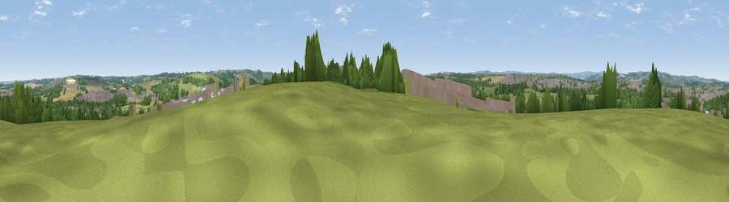

Viewpoint near Duckmanton
#26412 in England · top 39% of its area beats it · near DuckmantonWhere it is
The exact computed spot (SK 43925 72975). Click the marker for map links.
The view, rendered

A 360° render of this exact spot computed from the terrain model, tree cover and land cover — summer colours, afternoon light, calibrated against photographs of famous viewpoints. Real trees, hedges and buildings will differ in detail.
The panorama
Grey silhouette: terrain skyline in each direction (720 bearings, Earth curvature and refraction included). Dashed green: skyline with trees (+15 m) and buildings (+8 m) as obstacles. Blue strip: how far the ground is visible on each bearing.
Where the view opens
Wedge length = distance to the farthest visible ground on that bearing (vegetation-aware). Rings at 10, 25 and 50 km.
What fills the view
36% grassland · 26% woodland · 20% cropland · 17% built-up ·
Angular shares of the visible panorama (visual magnitude), not map area. Landscape diversity 0.61 (0–1 Shannon).
Key numbers
More beautiful places nearby
The staircase of upgrades: each row has a higher view potential than everything closer. Driving times are estimates from straight-line distance, calibrated against real road routing — check an actual route before setting out.
| Place | Direction | Drive | Score |
|---|---|---|---|
| Viewpoint near Shuttlewood | E · 2 km | ~5 min | 53.3 |
| Viewpoint near Bolsover | ESE · 4 km | ~9 min | 60.4 |
| Viewpoint near Ridgeway | NNW · 10 km | ~19 min | 67.6 |
| Viewpoint near Alton | SW · 12 km | ~23 min | 67.7 |
| Viewpoint near Brackenfield | SSW · 16 km | ~28 min | 68.3 |
| Viewpoint near Holmesfield | WNW · 16 km | ~28 min | 69.4 |
| Crich Stand | SSW · 20 km | ~34 min | 73.0 |
| Alport Height | SSW · 25 km | ~41 min | 73.9 |
53.25198, -1.34312 · source: screening · position refined by local search. Computed location — check access rights before visiting.